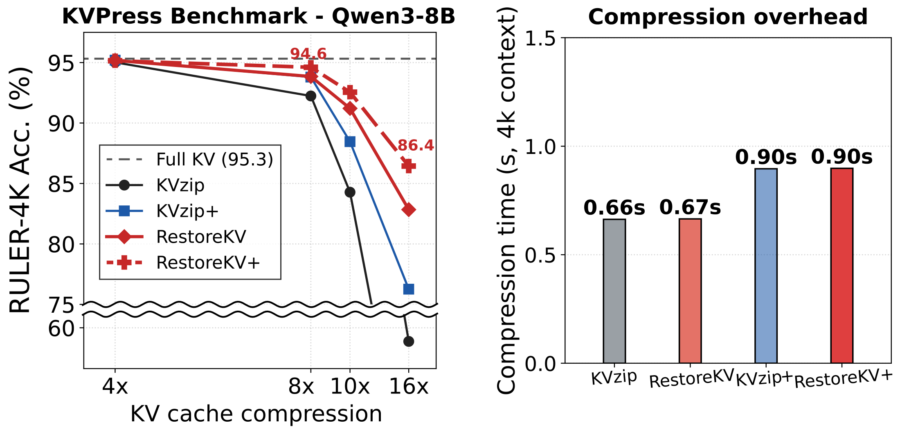
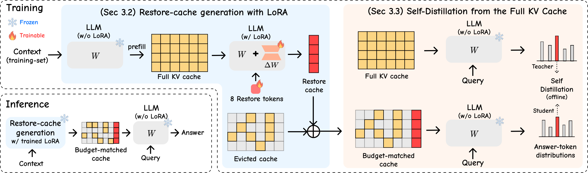
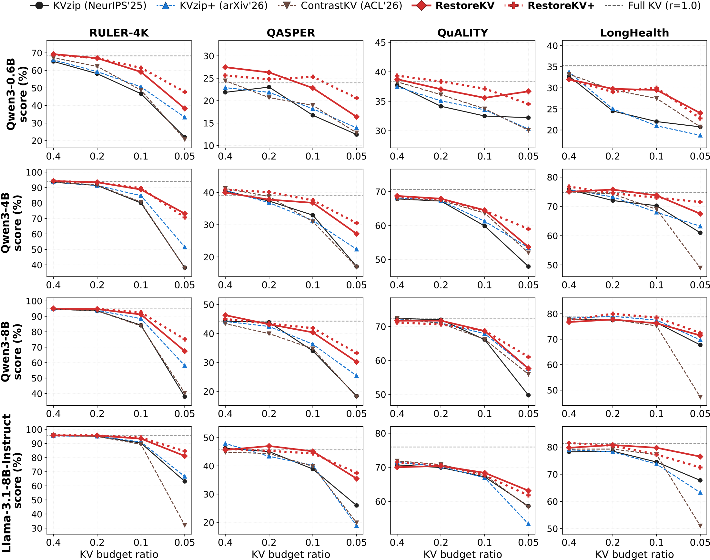
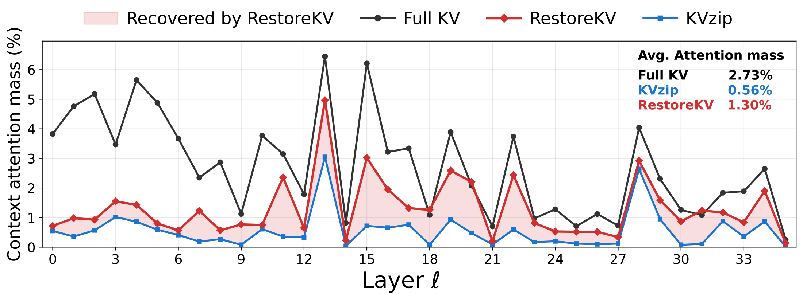
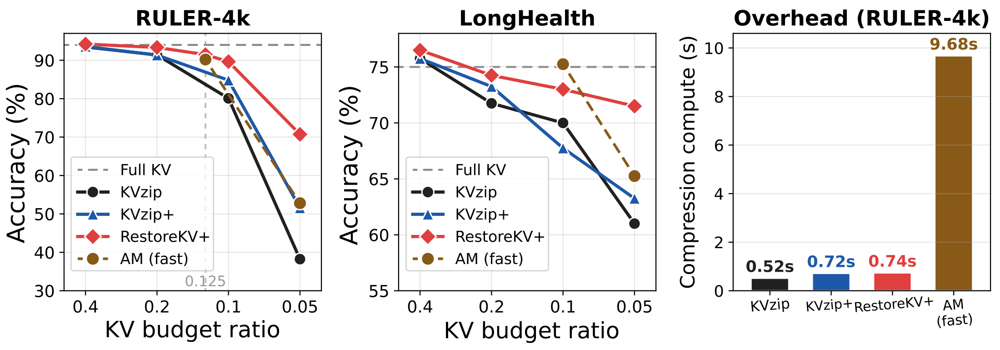
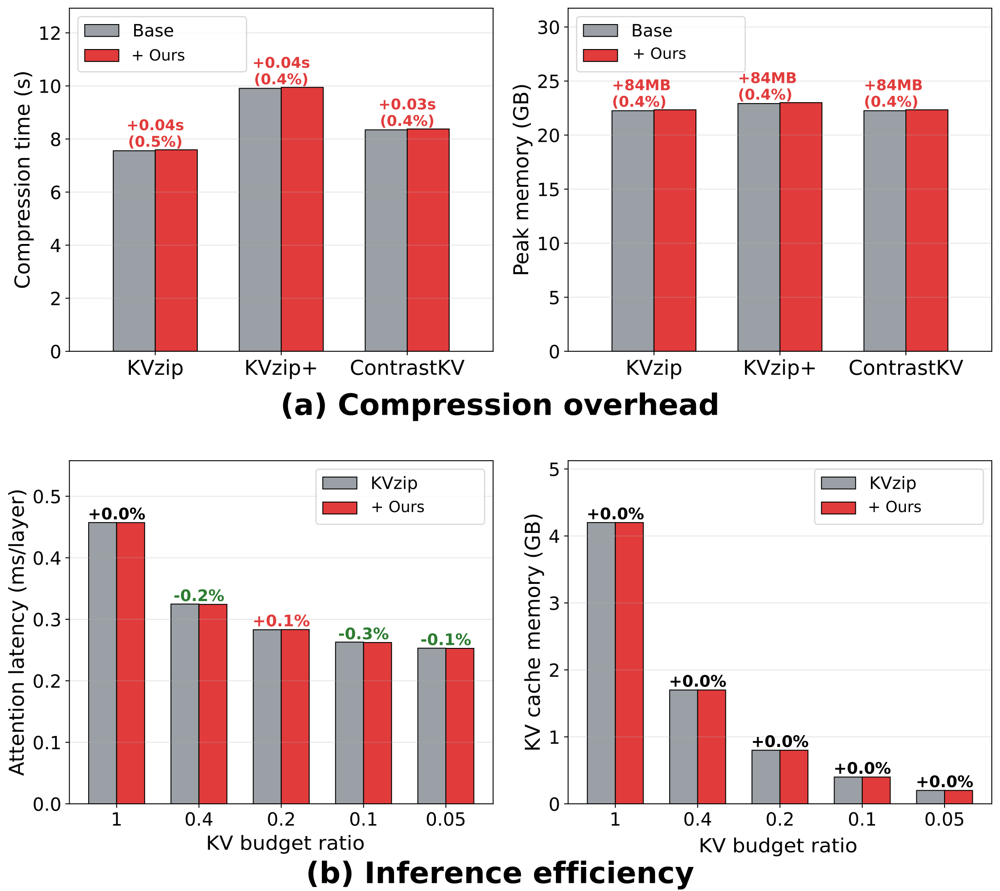

Existing query-agnostic KV eviction only decides which original KV pairs to keep. RestoreKV adds a learned, budget-matched restoration: a single LoRA-adapted restore pass generates a compact, context-conditioned restore cache — recovering full-cache behavior under aggressive eviction while training only 0.4% of parameters and adding <0.5% one-time overhead.
Instead of learning only which original KV pairs to retain, we learn a shared mechanism that generates a compact, context-conditioned restore cache to complement the retained context cache.
RestoreKV is a single-pass plug-in that preserves the base importance scorer and eviction rule. Its LoRA adapters act only during restore-cache generation, leaving query processing and decoding unchanged.
Improvements across five eviction methods, four backbones, and four long-context benchmarks — and analysis showing that attention-side adaptation is the primary source of recovery under aggressive eviction.
A single LoRA-adapted restore pass, trained offline by self-distillation, generates a compact restore cache that is merged with the retained context under the same total KV budget.


| Method | r = 0.2 | r = 0.1 | r = 0.05 |
|---|---|---|---|
| KVzip | 91.4 | 80.1 | 38.2 |
| + RestoreKV | 93.5+2.1 | 88.8+8.7 | 73.2+35.0 |
| KVzip+ | 91.3 | 84.8 | 51.6 |
| + RestoreKV | 93.3+2.0 | 89.7+4.9 | 70.7+19.1 |
| ContrastKV | 91.6 | 80.7 | 38.0 |
| + RestoreKV | 92.3+0.7 | 84.3+3.6 | 40.2+2.2 |
| SnapKV | 33.8 | 20.6 | 12.7 |
| + RestoreKV | 37.7+3.9 | 26.3+5.7 | 14.3+1.6 |
| H2O | 8.0 | 3.5 | 3.2 |
| + RestoreKV | 17.3+9.3 | 11.6+8.1 | 5.7+2.5 |
r is the KV budget ratio (fraction of the full cache retained). RestoreKV is a budget-matched plug-in — base and + RestoreKV use the same total budget. Gains are largest at the tightest budget (r = 0.05). Full results over LongHealth, QuALITY and QASPER are in the paper.


